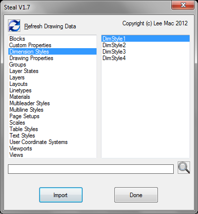

Steal from Drawing
This page is delivered for consistency purposes only, as part of the LeeMac sample module of DynALisp, which shows how DynALisp turns existing AutoLISP programs into a module. The program and its description are the work of Lee Mac, who keeps all the credit for them. The original page, with the latest version, is on Lee Mac's website: https://lee-mac.com/steal.html
| Function Syntax | LM-Steal – original syntax: Steal / StealAll / StealLast / StealTemplate / StealTemplates (see aliases) |
| Current Version | 1.8 |
| Compatible with AutoCAD for Mac? | No |
| Compatible with AutoCAD LT? | No |
| This program is also available at the Autodesk Exchange App Store | |
| Original Page | lee-mac.com/steal.html |
Program Overview
This program allows the user to import (humourously: 'steal') items from another drawing into the current drawing.
Upon running the program with the command syntax 'Steal' at the AutoCAD command-line, the user is prompted to select a drawing file (dwg/dwt/dws) from which to steal items. Following a valid selection, if the selected drawing contains items not already present in the current drawing, a dialog will appear displaying items available for import.
The user may choose multiple items from a list of:
- Blocks
- Layers
- Linetypes
- Dimension Styles
- Text Styles
- Table Styles
- MLeader Styles
- MLine Styles
- Layouts
- Page Setups
- User Coordinate Systems
- Named Groups
- Views
- Layer States
- Scales
- Materials
- Named Viewports
- Drawing Properties
- Custom Properties
The above collections are listed in the left-hand list panel of the dialog, and items within each selected collection are listed to the right.
The interface allows the user to import multiple items from several collections without exiting or restarting the program, since the dialog will remain until either the user presses the Done button, or there is nothing left to import from the selected drawing.
The user may update the data displayed in the dialog by pressing the Refresh button located in the top-left corner of the dialog. A refresh of the drawing data may be required after importing items such as blocks since these items may have object dependencies (such as layers, linetypes, and other block definitions dependent upon the constituent objects of the imported block) which are also be imported to the active drawing.
The user may also search the collections for a specific item to import using the search panel to the bottom of the dialog. The search is not case-sensitive and may use wildcards.
Available Commands
Steal
The standard program. The user is prompted to select a drawing file (dwg/dwt/dws) and may proceed to select from a list of items to import to the active drawing.
Steal All
The program may also be called with the command StealAll which will prompt the user to select a drawing file then proceed to automatically steal everything from the selected drawing.
Steal Last
The StealLast command allows the user to steal items from the last selected drawing, if a last drawing exists and can be located, else the user is prompted to select a drawing as per the standard command.
Steal Template
Another command: StealTemplate will attempt to locate and interface with the QNew template file, or, if the QNew template is not set, will allow the user to select from a list of template files residing in the template drawing path. If no template files are found, the file selection dialog will appear as per the standard command.
Steal Templates
The StealTemplates command allows the user to import items from a specific template file selected from a list of template files found in the template drawing path. If no template files are found, the file selection dialog will appear as per the standard command.
Dialog Preview

Calling the Program as a Subfunction
| Function Syntax | (Steal [dwg] [lst]) |
| Current Version | 1.8 |
| Arguments | ||
|---|---|---|
| Symbol | Type | Description |
| dwg | String | Filename of drawing from which to import items |
| lst | List | List of items or wildcard patterns to import from drawing, in the format described below |
| Returns | ||
| The return of this function is undefined. | ||
The program may also be called with optional parameters so that users may bypass the dialog interface or file selection dialog, or perhaps call the function from other programs or from an acaddoc.lsp to import items automatically.
Notes on Function Arguments
The Steal subfunction takes the form:
(Steal <Drawing Filename> <Item List>)
Drawing Filename (dwg)
The full filename of the drawing from which items are to be imported.
Item List (lst)
A list of items to be imported, in the following format:
( ( <Collection 1> (<Item 1> <Item 2> ... <Item N>) ) ( <Collection 2> (<Item 1> <Item 2> ... <Item N>) ) ... ( <Collection N> (<Item 1> <Item 2> ... <Item N>) ) )
Where Collection is the name of a collection of items, and may be one of the following keywords:
"Blocks"
"Layers"
"Linetypes"
"Text Styles"
"Dimension Styles"
"Layouts"
"Views"
"Materials"
"Viewports"
"Page Setups"
"User Coordinate Systems"
"Groups"
"Drawing Properties"
"Custom Properties"
"Multileader Styles"
"Multiline Styles"
"Table Styles"
"Scales"
"Layer States"
Note that the collection keyword is not case-sensitive.
'Item 1' ... 'Item N' are the names of specific items or wildcard patterns to match a number of items to be imported into the current drawing. Note that these are also not case-sensitive.
Examples
The following example will attempt to import Layers: 'Layer1' & 'Layer2', and all Dimension Styles beginning with DimStyle from the drawing: 'C:\My Folder\MyDrawing.dwg' into the current drawing.
(Steal "C:\\My Folder\\MyDrawing.dwg" '( ( "Layers" ("Layer1" "Layer2") ) ( "Dimension Styles" ("DimStyle*") ) ) )
Note that both arguments are optional, hence the program may be called...
(Steal nil '( ( "Layers" ("Layer1" "Layer2") ) ( "Dimension Styles" ("DimStyle*") ) ) )
...to prompt for a drawing from which to extract specific items, or...
(Steal "C:\\My Folder\\MyDrawing.dwg" nil)
...to prompt for items to extract from a specific drawing.
Bundled program notes
;;-----------------------------------------=={ Steal }==-----------------------------------------;;
;; ;;
;; ;;
;; -------------------------------------------------- ;;
;; Program Overview ;;
;; -------------------------------------------------- ;;
;; ;;
;; Allows the user to import (humourously: 'steal') items from another drawing into the active ;;
;; drawing. ;;
;; ;;
;; Upon running the program with 'Steal' at the AutoCAD command-line, the user is prompted to ;;
;; select a drawing to steal from (dwg/dwt/dws). Upon selection, if the selected drawing ;;
;; contains items not already present in the current drawing, a dialog will appear detailing ;;
;; items available for import. ;;
;; ;;
;; The user may choose multiple items from a list of: ;;
;; ;;
;; - Blocks ;;
;; - Layers ;;
;; - Linetypes ;;
;; - Dimension Styles ;;
;; - Text Styles ;;
;; - Table Styles ;;
;; - MLeader Styles ;;
;; - MLine Styles ;;
;; - Layouts ;;
;; - Page Setups ;;
;; - User Coordinate Systems ;;
;; - Groups ;;
;; - Views ;;
;; - Layer States ;;
;; - Scales ;;
;; - Materials ;;
;; - Viewports ;;
;; - Drawing Properties ;;
;; - Custom Properties ;;
;; ;;
;; The above collections are listed in the left-hand list panel of the dialog, and items ;;
;; within each selected collection are listed to the right. ;;
;; ;;
;; The user may import multiple items from several collections without exiting or restarting ;;
;; the program, since the dialog will remain until either the user presses the 'Done' button, ;;
;; or there is nothing left to import from the selected drawing. ;;
;; ;;
;; The user may update the data displayed in the dialog by pressing the 'Refresh' button ;;
;; located in the top-left corner of the dialog. This may be required when importing such ;;
;; items as blocks since layers, linetypes, and other block definitions dependent upon the ;;
;; constituent objects of the imported block may also be imported to the active drawing. ;;
;; ;;
;; The user may also search the collections for a specific item to import using the search ;;
;; panel to the bottom of the dialog. The search is not case-sensitive and may use wildcards. ;;
;; ;;
;; ;;
;; -------------------------------------------------- ;;
;; Available Commands ;;
;; -------------------------------------------------- ;;
;; ;;
;; Steal ;;
;; -------------------------------------- ;;
;; The standard program. The user is prompted to select a drawing file (dwg/dwt/dws) and may ;;
;; proceed to select from a list of items to import to the active drawing. ;;
;; ;;
;; ;;
;; Steal All ;;
;; -------------------------------------- ;;
;; The program may also be called with the command 'StealAll' which will prompt the user to ;;
;; select a drawing file then proceed to automatically steal everything from the selected ;;
;; drawing. ;;
;; ;;
;; ;;
;; Steal Template ;;
;; -------------------------------------- ;;
;; Another command: 'StealTemplate' will attempt to locate and interface with the QNew ;;
;; template file, or, if the QNew template is not set, will allow the user to select from a ;;
;; list of template files residing in the template drawing path. If no template files are ;;
;; found, the file selection dialog will appear as per the standard command. ;;
;; ;;
;; ;;
;; Steal Templates ;;
;; -------------------------------------- ;;
;; The 'StealTemplates' command allows the user to import items from a specific template file ;;
;; selected from a list of template files found in the template drawing path. If no template ;;
;; files are found, the file selection dialog will appear as per the standard command. ;;
;; ;;
;; ;;
;; Steal Last ;;
;; -------------------------------------- ;;
;; The 'StealLast' command allows the user to steal items from the last selected drawing, if ;;
;; a last drawing exists and can be located, else the user is prompted to select a drawing as ;;
;; per the standard command. ;;
;; ;;
;; ;;
;; -------------------------------------------------- ;;
;; Calling the Program as a Subfunction ;;
;; -------------------------------------------------- ;;
;; ;;
;; The program may also be called with optional parameters so that users may bypass the dialog ;;
;; interface or file selection dialog, or perhaps call the function from other programs or ;;
;; from an ACADDOC.lsp to import items automatically. ;;
;; ;;
;; Function Format: ;;
;; -------------------------------------- ;;
;; ;;
;; (Steal <dwg> <lst>) ;;
;; ;;
;; Arguments: ;;
;; -------------------------------------- ;;
;; ;;
;; - dwg [STR] [Optional] ;;
;; ---------------------------------- ;;
;; The full filename of the drawing from which items are to be imported. ;;
;; ;;
;; - lst [LIST] [Optional] ;;
;; ---------------------------------- ;;
;; A list of items to be imported, in the following format: ;;
;; ;;
;; ( ;;
;; ( ;;
;; <Collection 1> ;;
;; (<Item 1> <Item 2> ... <Item N>) ;;
;; ) ;;
;; ( <Collection 2> ;;
;; (<Item 1> <Item 2> ... <Item N>) ;;
;; ) ;;
;; ... ;;
;; ( <Collection N> ;;
;; (<Item 1> <Item 2> ... <Item N>) ;;
;; ) ;;
;; ) ;;
;; ;;
;; Where 'Collection' is the name of a collection of items, and may be one of: ;;
;; ;;
;; "Blocks" ;;
;; "Layers" ;;
;; "Linetypes" ;;
;; "Text Styles" ;;
;; "Dimension Styles" ;;
;; "Layouts" ;;
;; "Views" ;;
;; "Materials" ;;
;; "Viewports" ;;
;; "Page Setups" ;;
;; "User Coordinate Systems" ;;
;; "Groups" ;;
;; "Drawing Properties" ;;
;; "Custom Properties" ;;
;; "Multileader Styles" ;;
;; "Multiline Styles" ;;
;; "Table Styles" ;;
;; "Scales" ;;
;; "Layer States" ;;
;; ;;
;; Note that the collection keyword is *not* case-sensitive. ;;
;; ;;
;; 'Item 1' ... 'Item N' are the names of specific items or wildcard patterns to match a ;;
;; number of items to be imported into the current drawing. ;;
;; ;;
;; Note that these are also *not* case-sensitive. ;;
;; ;;
;; ;;
;; -------------------------------------------------- ;;
;; Examples ;;
;; -------------------------------------------------- ;;
;; ;;
;; The following example will attempt to import Layers: 'Layer1' & 'Layer2', and all Dimension ;;
;; Styles beginning with 'DimStyle' (not case-sensitive) from the drawing: ;;
;; 'C:\My Folder\MyDrawing.dwg' into the current drawing. ;;
;; ;;
;; (Steal "C:\\My Folder\\MyDrawing.dwg" ;;
;; '( ;;
;; ( ;;
;; "Layers" ;;
;; ("Layer1" "Layer2") ;;
;; ) ;;
;; ( ;;
;; "Dimension Styles" ;;
;; ("DimStyle*") ;;
;; ) ;;
;; ) ;;
;; ) ;;
;; ;;
;; Note that both arguments are optional, hence the program may be called... ;;
;; ;;
;; (Steal nil ;;
;; '( ;;
;; ( ;;
;; "Layers" ;;
;; ("Layer1" "Layer2") ;;
;; ) ;;
;; ( ;;
;; "Dimension Styles" ;;
;; ("DimStyle*") ;;
;; ) ;;
;; ) ;;
;; ) ;;
;; ;;
;; ...to prompt for a drawing from which to extract specific items, or... ;;
;; ;;
;; (Steal "C:\\My Folder\\MyDrawing.dwg" nil) ;;
;; ;;
;; ...to prompt for items to extract from a specific drawing. ;;
;; ;;
;;-----------------------------------------------------------------------------------------------;;
;; ;;
;; Function Syntax: ;;
;; ;;
;; Steal ;;
;; StealAll ;;
;; StealTemplate ;;
;; StealTemplates ;;
;; StealLast ;;
;; (Steal <dwg> <lst>) ;;
;; ;;
;;-----------------------------------------------------------------------------------------------;;
;; ;;
;; Author: ;;
;; ;;
;; Copyright © 2012 Lee Mac - www.lee-mac.com ;;
;; ;;
;;-----------------------------------------------------------------------------------------------;;
;; ;;
;; TERMS AND CONDITIONS OF USE ;;
;; ;;
;; This license and disclaimer statement constitutes a legal agreement between you (either as ;;
;; an individual or a single entity) and Lee Mac (the "Author"), for this software product ;;
;; (the "Software"). ;;
;; ;;
;; By downloading, installing, copying, or otherwise using the software, you agree to be bound ;;
;; by all of the following terms and conditions of this license and disclaimer agreement. ;;
;; ;;
;; If you do not agree with all the terms and conditions of this agreement, you must ;;
;; immediately cease use of the Software and destroy all copies of the Software and all of its ;;
;; component or constituent parts in your possession or under your control. ;;
;; ;;
;; The Software is freeware. You may use it royalty free for private use. ;;
;; ;;
;; You may redistribute the Software providing you have written consent from the Author, and ;;
;; that no modifications are made to the original content. ;;
;; ;;
;; You may not charge any fees for the redistribution or use of this Software. ;;
;; ;;
;; The Software is provided "as is", and with all faults. All warranties, expressed or implied, ;;
;; including, but not limited to implied warranties of fitness for a particular use or purpose ;;
;; are hereby disclaimed. There is no guarantee that the operation of this Software will be ;;
;; uninterrupted or error free. ;;
;; ;;
;; You acknowledge and agree that your use of the Software is at your own risk. ;;
;; ;;
;; The Software is a copyrighted work and is protected by copyright law and international ;;
;; copyright treaty. ;;
;; ;;
;;-----------------------------------------------------------------------------------------------;;
;; ;;
;; Version History: ;;
;; -------------------------------------- ;;
;; ;;
;; 1.0: 16/01/2011 - First Release. ;;
;; ;;
;;-----------------------------------------------------------------------------------------------;;
;; ;;
;; 1.1: 16/01/2011 - Added Layouts & Page Setups to list of Collections. ;;
;; - Added ability to import multiple items until dialog is closed. ;;
;; ;;
;;-----------------------------------------------------------------------------------------------;;
;; ;;
;; 1.2: 18/01/2011 - Omitted XRef items from collection lists. ;;
;; - Added Search bar to search for specific items. ;;
;; - Added Named Views & UCS to list of collections. ;;
;; ;;
;;-----------------------------------------------------------------------------------------------;;
;; ;;
;; 1.3: 18/01/2011 - Accounted for Nested blocks. ;;
;; - Added LayerStates to list of collections. ;;
;; ;;
;;-----------------------------------------------------------------------------------------------;;
;; ;;
;; 1.4: 19/01/2011 - Added dwt/dws compatibility. ;;
;; - Added command-line functionality. ;;
;; - Added Scales to list of collections. ;;
;; ;;
;;-----------------------------------------------------------------------------------------------;;
;; ;;
;; 1.5: 07/09/2011 - Added ability to use Wildcard patterns in lst argument to import all ;;
;; items matching the pattern. ;;
;; - Added Materials & Viewports to list of collections. ;;
;; - Added 'StealAll' command to quickly steal everything from a drawing. ;;
;; - Added 'StealTemplate' command to quickly steal items from the ;;
;; QNewTemplate or other Template file. ;;
;; ;;
;;-----------------------------------------------------------------------------------------------;;
;; ;;
;; 1.6: 29/04/2012 - Fixed bug causing the program to crash for versions in which some ;;
;; collections are not available. ;;
;; - Expanded program header and removed local functions to improve program ;;
;; performance. ;;
;; ;;
;;-----------------------------------------------------------------------------------------------;;
;; ;;
;; 1.7: 16/09/2012 - Steal file selection dialog will now remember the directory of the ;;
;; last selected drawing between drawing sessions. ;;
;; - Main error handler completely rewritten. ;;
;; - 'ItemList' parameter renamed to 'lst' and parameter list structure ;;
;; modified to separate items from collection keywords. ;;
;; - Added Groups to list of collections. ;;
;; - Added Drawing Properties to list of collections. ;;
;; - Added Custom Properties to list of collections. ;;
;; - Incorporated a 'Refresh' button to enable the user to refresh the ;;
;; drawing data upon importing items such as blocks with object ;;
;; dependencies (e.g. layers, linetypes, nested blocks). ;;
;; - Exchanged 'Search' button for an appropriate bitmap icon and replaced ;;
;; alert dialogs with dialog error tile. ;;
;; - 'StealTemplate' command rewritten to call new 'StealTemplates' command ;;
;; if the QNew template is not available. ;;
;; - Added 'StealTemplates' command to allow the user to import items from ;;
;; a selected template file from the template drawing path. ;;
;; - Added 'StealLast' command to allow the user to steal from the last ;;
;; selected drawing, if available. ;;
;; - Implemented a workaround to overcome a bug pertaining to deep-cloning ;;
;; Plot Configuration objects using the CopyObjects method wherein the ;;
;; associated entry in the ACAD_PLOTSETTINGS dictionary becomes anonymous. ;;
;; - Majority of program rewritten to improve code performance and ;;
;; readability. ;;
;; ;;
;;-----------------------------------------------------------------------------------------------;;
;; ;;
;; 1.8: 18/09/2012 - Fixed bug causing the program to error when all items in a collection ;;
;; are deselected using the Ctrl key, and the 'Import' button is pressed. ;;
;; - The active drawing will now only be regenerated after program ;;
;; completion when one or more items have been imported. ;;
;; ;;
;;-----------------------------------------------------------------------------------------------;;
;;;(setq stealversionnumber "1.8")
;;-----------------------------------------------------------------------------------------------;;
;; Program Commands ;;
;;-----------------------------------------------------------------------------------------------;;
;;-----------------------------------------------------------------------------------------------;;
;; Steal ;;
;;-----------------------------------------------------------------------------------------------;;
;; Standard program. User is prompted to select a drawing and then select from a list of items ;;
;; to import to the active drawing. ;;
;;-----------------------------------------------------------------------------------------------;;
;;;(defun c:Steal nil (Steal nil nil))
;;-----------------------------------------------------------------------------------------------;;
;; Steal All ;;
;;-----------------------------------------------------------------------------------------------;;
;; Will import everything from the selected drawing. ;;
;;-----------------------------------------------------------------------------------------------;;
Command Names And Aliases
As in every DynALisp module, each program of this sample module has one main command, named LM-*, and the original command names of Lee Mac's page are kept as its aliases: they run the same command, and can be added, renamed or removed in Dyl-Suite (saved in Resources\Aliases.csv). The rows marked ↳ are child commands of LM-Steal: they are run by their alias, or picked from LM-Steal when it lists them (their command is named Pst-*).
| Command | Aliases | Name |
|---|---|---|
| LM-Steal | STEAL | Steal |
| ↳ STEALALL | – | Steal All |
| ↳ STEALTEMPLATE | – | Steal From Template |
| ↳ STEALTEMPLATES | – | Steal From Templates |
| ↳ STEALLAST | – | Steal Last |